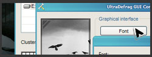

ULTRADEFRAG
Дефрагментатор дисков с открытым исходным кодом

")


ULTRA DEFRAG
ДОКУМЕНТАЦИЯ
QUICK LINKS
- ART GALLERY
- ULTRADEFRAG WEB LOGOS
- PERSONAL PAGE OF DMITRI
- PERSONAL BLOG OF JUSTIN
- PERSONAL PAGE OF SAYEM
The term UltraDefrag is a shorthand for the Ultra Defragmenter and holds no connection with potential owners of registered trademarks or other rights. All trademarks, brands, and names are the property of their respective owners.


Загрузить | Список возможностей | Скриншоты | Форум |
Новости - UltraDefrag 4.0 - готов новый официальный релиз программы!
Новая версия радикально стабильнее всех предыдущих:
- Многие серьезные ошибки исправлены.
- Код обработки ошибок значительно улучшен.
- Драйвер режима ядра удален насовсем как компонент, не особенно надежный по определению.
- Документация переписана, чтобы быть более понятной.
- Вебсайт оптимизирован для лучшей навигации.
Здесь полный список изменений.
UltraDefrag это мощная программа для дефрагментации дисков. Первая, среди программ с открытым исходным кодом, которая может обрабатывать файлы, заблокированные системой, такие как файлы реестра и файл подкачки. Программа работает с этими файлами на этапе загрузки Windows, когда они еще не заблокированы.
Другая важнейшая цель программы - максимальная скорость дефрагментации.
UltraDefrag прекрасно работает на Windows NT 4.0, Windows 2000, Windows XP, Windows Server 2003, Windows Vista, Windows Server 2008, Windows 7 и на всех 64-битных версиях Windows.
Некоторые интересные возможности UltraDefrag (полный список здесь):
 Дефрагментация во время загрузки Windows:
Дефрагментация во время загрузки Windows:
Эта функция программы позволяет обрабатывать файлы, которые обычно заблокированы системой, например реестр и файл подкачки.
 Выключение компьютера после завершения работы:
Выключение компьютера после завершения работы:
Если дефрагментация занимает много времени, включите эту опцию и UltraDefrag выключит ваш компьютер после завершения дефрагментации. Эта опция уменьшает расход электроэнергии и делает ваш компьютер безопаснее.
 Быстрая оптимизация диска:
Быстрая оптимизация диска:
Оптимизатор перемещает все файлы в начало диска. Это уменьшает время доступа к файлам. Алгоритм намеренно очень прост, так как сложные алгоритмы имеют тенденцию занимать очень много времени.
 Дефрагментация отдельного файла или каталога:
Дефрагментация отдельного файла или каталога:
Выберите любой файл или каталог в проводнике Windows и дефрагментируйте его. Эта опция особенно удобна после установки новых игр или софта для ускорения их работы
- Простой графический интерфейс:
UltraDefrag имеет простой графический интерфейс,
не отягощенный
свистоперделками. Шрифт можно настраивать,
общий же стиль окна соответствует выбранной теме Windows.
 Планировщик:
Планировщик:
Выберите время, когда вам удобно выполнять дефрагментацию, и UltraDefrag сделает вам эту работу точно в заданный срок.
Переведите UltraDefrag на ваш язык!

Если вы владеете языком, на который программа еще не переведена или заметили неточности в уже существующем переводе, добро пожаловать в нашу команду переводчиков!
Мы всегда рады вашей поддержке!
ЗАГРУЗИТЬ ULTRADEFRAG

Для 32-битных систем
Windows NT4.0, 2000, XP, Vista, 7 - Server NT4.0, 2000, 2003, 2008

Для 64-битных систем
x64 Издания Windows XP, Vista, 7 - Server 2003, 2008

Для 64-битных систем
на базе процессора
Intel Itanium.